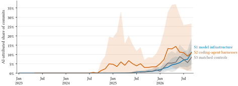
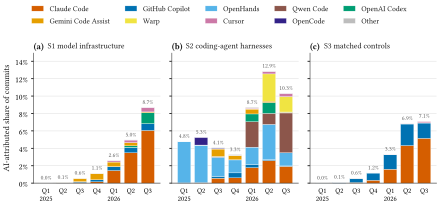
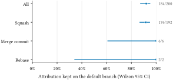
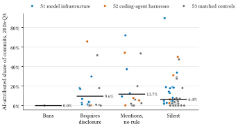
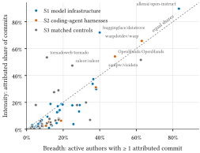
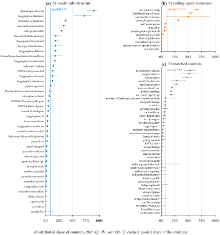
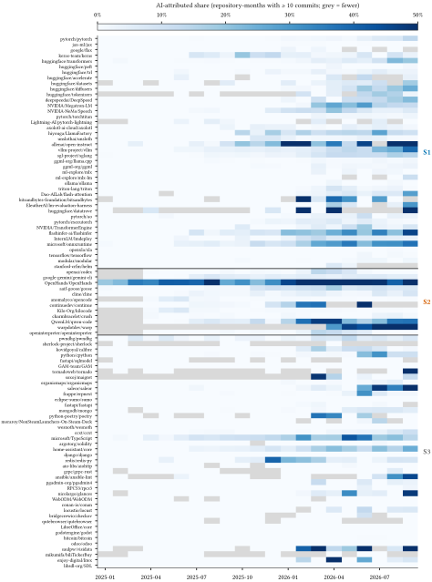

1 Introduction
Frontier laboratories now say that most of their own code is written with their models. Anthropic reports that more than eighty percent of the code merged into its codebase in May 2026 could be attributed to Claude [1]. Such figures come from inside one company and cannot be checked. The question behind them can be asked in public, though: how much of the open-source code that trains and serves AI models is already produced with AI tools? We answer a narrower and checkable version of it: what share of commits to that code declare AI involvement in their metadata?
We find that the answer in mid-2026 is about one commit in 11 (8.7% in July–September 2026), and almost nothing before 2025 (Figure 1). The more surprising finding is the comparison. Popular repositories with nothing to do with AI, matched on stars, language and activity, carry AI attribution at about the same rate (7.1%) and have followed the same curve since early 2025. The open-source coding-agent harnesses, the tools that produce these attributions, started earlier but are not clearly ahead in 2026. In this population, “AI building AI” is not a special case: it is the same adoption curve that is reaching all of open source.
The instrument is simple, and the simplicity is deliberate. Many coding agents add a signature to the commits they help write: Claude Code adds a Co-Authored-By trailer by default [2], GitHub’s cloud agent authors commits under its own account [3], and Cursor, Jules, Aider and Codex have their own conventions [4], [5], [6], [7]. Counting these signatures is not new [8], [9], [10]. What this study adds is (i) a pre-registered monthly series for a defined population of AI-infrastructure repositories, with matched controls and the agent harnesses as a third group; (ii) a catalogue in which every signature is backed by three public example commits; (iii) a direct measurement of how often attribution on a pull request’s commits survives the merge to the default branch; and (iv) a link between the measured share and each repository’s stated AI-contribution policy. The scanner, coauthored, is a small open-source command-line tool; it reproduces every number in this paper from a recorded snapshot and draws the same curve for any organisation’s repositories.
Throughout, the unit is the AI-attributed commit, and every share is a lower bound on AI involvement. An attributed commit is not a commit “written by AI”: the trailer says a tool took part, not how much of the change it produced. Section 3 explains how attribution goes missing.
2 Related work
Measuring AI’s share of code. Daniotti et al. train a classifier to detect AI-written Python functions in GitHub commits and estimate national shares and productivity effects [11]. Their detector measures code style; we count declarations. The two quantities have different errors and should not be compared one-to-one. Horikawa et al. show that once signatures are masked, the best detector of agent commits loses most of its precision at realistic base rates, and conclude that signature-based studies report a lower bound [9].
Counting signatures. Robbes et al. estimate project-level coding-agent adoption across a large GitHub sample from co-author trailers, agent accounts, configuration files, branch names and labels [8]. AIDev collects agent-authored pull requests from five agents [12]. Blog-scale and dashboard counts of Co-Authored-By: Claude commits across public GitHub [10], [13], [14] and GitHub’s own telemetry on agent-started pull requests [15] report fast growth; each describes its count as a floor, and none fixes a population, compares it with controls, or measures loss at merge. Our contribution is a narrow, pre-registered and reproducible series rather than a new signal.
Bots, trailers and merges. Separating automation from people in commit history has a long history in mining software repositories [16]. Our denominator removes maintenance bots (dependency updates, releases) but keeps AI-agent accounts, which do commit code on someone’s behalf. The Co-authored-by convention [17] interacts with squash merging, whose default message may or may not include the individual commits [18], and GitHub itself adds co-author trailers for commit authors at squash time [19].
Policies. Open-source projects have adopted AI-contribution policies ranging from outright bans [20], [21], [22] to disclosure requirements [23], [24] and the Linux kernel’s Assisted-by: tag [25]. Hora and Robbes classify the policies of popular repositories [26]; we relate a similar classification to measured attribution.
Productivity and usage. Experiments find that AI assistance changes the speed and volume of programming work, in both directions [27], [28], [29], that it raises open-source contributions [30], and that agentic tools are used mostly to delegate whole tasks [31]. Task-length benchmarks show fast capability growth [32]. None of these measures what share of a real repository’s history declares AI involvement.
3 What an attribution is, and how it goes missing
A commit is AI-attributed if (a) a Co-authored-by:, Assisted-by: or Co-developed-by: line in its message names an identity in the signature catalogue, (b) its author or committer is an AI-agent account in the catalogue, or (c) it carries a tool’s verbatim marker such as Generated with Claude Code. Identities are matched in full on e-mail address and/or name; no free-text keyword (“AI”, “GPT”, “Claude”) counts. A Signed-off-by: line never counts, because it is a human’s certification of origin. The Linux kernel’s Assisted-by: AGENT:MODEL format carries no e-mail address and cannot be tied to a catalogue identity; we report it as a separate indicator (140 commits in S1 and 62 in S2 over the window, none in S3).
The signal is a lower bound for three reasons.
- The trailer is switched off. Every major tool lets the user disable or change attribution [2], [4], [5], [7]. Since February 2026 Jules can commit as the user alone [5], which leaves no trace at all.
- The trailer is stripped at merge. A trailer on a pull request’s commits reaches the default branch only if the merge keeps it: a merge commit and a rebase keep the original commits, but a squash commit carries whatever message the repository’s squash setting produces [18]. We measure this loss in Section 6.
- The tool never attributes. Autocomplete, chat assistants and copy-paste leave nothing in git, and some agents add no signature by default. Some policies also exempt maintainers from disclosure [24].
The tool mix in the data is therefore partly a property of the instrument: tools that sign by default are over-represented relative to their use. Pre-registered hypothesis H5 tests the instrument as much as the market.
4 Pre-registered design
The design, the repository lists, the bot list and the signature catalogue were frozen in a pre-registration tagged prereg-v1 (commit 27a6847) before any study repository was scanned; three pilot repositories, excluded from every analysis, were used to debug the scanner and discover signatures. Every later clarification is logged with its effect (DEVIATIONS.md).
Strata. Inclusion rules were applied to GitHub metadata before scanning. All repositories are public, not archived and not forks, with at least two thousand stars and at least two hundred default-branch commits in the twelve months to October 2026. S1 (42 repositories) contains model-building infrastructure across seven layers: training frameworks (PyTorch, JAX, Keras), model libraries (Transformers, PEFT, TRL, Diffusers), distributed training (DeepSpeed, Megatron-LM), fine-tuning and reinforcement learning, inference and serving (vLLM, SGLang, llama.cpp, Ollama), kernels and compilers (Triton, FlashAttention), and evaluation and data. S2 (12) contains open-source coding-agent harnesses whose primary product is a coding agent (e.g. OpenHands, Cline, Gemini CLI, Codex, Qwen Code). S3 (42) contains one matched control per S1 repository, drawn from popular non-AI repositories by a seeded nearest-neighbour match on stars and recent commit activity within the same language group (caliper ±50%), then screened by hand so that no control has model training or inference at its core. Lists, layers and reasons for every exclusion are in the appendix and the repository.
Snapshot. All 96 repositories were cloned on one UTC calendar day, 2026-10-28, with commit objects only, and their full default-branch history was scanned (2,850,951 commits, 631 seconds of clone and scan time, 1.32 GB). Head SHAs are recorded, and all counting is from those SHAs. Author and committer identities are replaced by a salted hash at ingest; no names, e-mail addresses or messages are stored.
Counting. The primary unit is a non-merge commit reachable from the default branch, dated by its committer date in UTC, in the window January 2023 to September 2026. Commits authored by maintenance bots are removed from the denominator; AI-agent accounts stay. Shared history (a fork or a vendored copy) is counted once per stratum, in the earliest-created repository. The catalogue has 52 entries for 28 tools (31 co-author identities, 16 agent accounts, 5 markers), each with three public commits as evidence and a passing and a failing test case. On a blind, hand-labelled sample of 200 pilot commits (80 attributed), the scanner’s precision and recall were 1.00 and 1.00.
Hypotheses. All shares are pooled over commits; repository-weighted shares are reported alongside. Confidence intervals are percentile intervals from 2,000 cluster-bootstrap resamples of repositories within stratum (seed 20261028).
- H1 (level): the pooled S1 share in 2026-Q3 is at least 5%.
- H2 (difference): S1 exceeds S3 in every month from April to September 2026, and the 2026-Q3 odds ratio is at least two with a CI above one.
- H3 (growth): the monthly logit slope of a binomial model is positive in S1 and in S2, and steeper in S1 than in S3 (CIs exclude zero).
- H4 (recursion): the 2026-Q3 share in S2 exceeds that in S1 (CI of the difference excludes zero).
- H5 (tools): Claude Code has the plurality of attributed commits in S1 ∪ S2 in every quarter from 2025-Q2 to 2026-Q3.
- H6 (survival): at least 80% of sampled merged pull requests with an attributed head commit keep the attribution on the default branch.
- H7 (policy, exploratory): repositories that require disclosure have a higher share than those that ban AI or are silent.
Holm’s correction is applied across H1–H6 for a family-wise claim; each hypothesis is also decided on its own rule. Pre-registered sensitivity analyses use author dates, include merges, keep only first-parent commits, require trailers in the final trailer block, include maintenance bots, remove the three largest repositories of each stratum, remove mirror-exported repositories, remove outside-caliper matches, and replace the model in H3 with a mixed model with a random intercept and slope per repository.
5 Results
5.1 The curve (RQ1–RQ3)
Figure 1 shows the monthly attributed share. Before 2025 it is close to zero everywhere: in 2024, 0 of 102,709 S1 commits were attributed, 88 of 8,007 in S2 and 5 of 99,830 in S3. The harnesses move first, from late 2024, driven by one project whose agent commits under its own account. S1 and S3 start rising together in mid-2025 and are almost indistinguishable afterwards: over the 2025 calendar year the pooled share was 0.46% in S1 and 0.47% in S3, and over January–September 2026 5.7% and 5.8%.

In 2026-Q3 the pooled share was 8.7% in S1 (3,632 of 41,728 commits; 95% CI 4.0%–14.5%; repository-weighted 10.5%), 10.3% in S2 (1.6%–23.7%) and 7.1% in S3 (2.3%–12.6%). The wide intervals reflect how unevenly attribution is spread across repositories (Figure 6): 39 of the 41 S1 repositories active in the quarter had at least one attributed commit, 15 had a share of ten percent or more, and the median repository share was 4.5%. In S3, 26 of 42 had any attributed commit, and the two largest contributors account for 66% of the stratum’s attributed commits.
Table 1 gives the decisions. H1 is supported on its pre-registered rule, which looks at the point estimate: the S1 share in 2026-Q3 is above the 5% floor, but its interval reaches below it, and the one-sided p-value against the threshold is 0.08 (0.41 after Holm’s correction). Of H1–H6, only H6 survives the family-wise correction. H2 is not supported: S1 is not above S3 in every month, and the 2026-Q3 odds ratio is 1.24 (95% CI 0.45–4.75). H3 is not supported: the monthly logit slope is clearly positive in S1 (0.239) but just as steep in S3 (0.214); the S2 slope (0.078; CI −0.015 to 0.179) includes zero, because the harnesses were already attributing in 2025. H4 is not supported: S2 is 1.6 percentage points above S1 in 2026-Q3, with a CI from −9.0 to 15.8 points.
Table 1. Pre-registered hypotheses. Estimates and 95% CIs from the cluster bootstrap; one-sided bootstrap p-values (H6: exact binomial test) and Holm-adjusted p-values across H1–H6. H7 is exploratory.
| Estimate | 95% CI | p (one-sided) | p (Holm) | Decision | |
|---|---|---|---|---|---|
| H1 S1 share, 2026-Q3 | 8.7% | 4.0%–14.5% | 0.081 | 0.407 | supported |
| H2 odds ratio S1 : S3 | 1.24 | 0.45–4.75 | 0.316 | 1.000 | not supported |
| H3 slope S1 − S3 (logit/month) | 0.025 | −0.080 to 0.077 | 0.317 | 1.000 | not supported |
| H4 share S2 − S1 (points) | 1.6 | −9.0 to 15.8 | 0.404 | 1.000 | not supported |
| H5 Claude Code margin, min. (points) | −75.8 | −96.5 to −41.0 | 1.000 | 1.000 | not supported |
| H6 attribution survives merge | 92.0% | 87.4%–95.0% | 0.000 | 0.000 | supported |
| H7 disclosure − (ban ∪ silent) (points) | 3.2 | – | – | – | exploratory |
The decisions do not depend on analysis choices (Appendix, Table 2). H1 holds and H2–H4 fail under author dates, with merges, on the first-parent chain, with strict trailer positions, with maintenance bots, without the three largest repositories of each stratum, without mirror-exported repositories and without the outside-caliper matches. The mixed model with a random intercept and slope per repository gives the same answer for H3: the S1 − S3 slope difference is −0.024 logit per month (Wald CI −0.105 to 0.058), while the S1 slope alone is 0.242 (0.193 to 0.290).
5.2 Which tools (RQ4)
The tool mix changed quickly (Figure 2). In S1 ∪ S2, OpenHands accounted for most attributed commits through 2025-Q3, almost all of them in its own repository; Gemini Code Assist, a code-review bot that commits suggested changes, led in 2025-Q4 (42%). Claude Code has led since 2026-Q1, with 34%, 42% and 52% of attributed commits in the three quarters of 2026. H5 is not supported because the plurality did not hold in 2025; the minimum margin of Claude Code over the next tool is −75.8 percentage points. Because Claude Code signs by default and many tools do not, its share of attributed commits overstates its share of AI-assisted commits by an unknown factor.

6 How much does the signal miss? (RQ5)
Survival through the merge. We sampled merged pull requests from S1 and S2 repositories (merged June 2025 to September 2026, uniformly at random within repository, repositories visited in turn) and, for each, compared the attribution on its commits with the attribution on the commit that reached the default branch. Of 2,542 pull requests inspected, 200 had at least one attributed commit, and in 184 of them the attribution reached the default branch (92.0%, 95% CI 87.4%–95.0%; H6 supported). Figure 3 splits the result by merge method. Almost all of these pull requests were squash-merged (192 of 200), and every loss happened at a squash merge: 176 of 192 squash merges kept the attribution, which fits GitHub’s default squash message, which lists the messages of the squashed commits, trailers included [18]. A loss happens when a repository’s squash setting uses the pull request’s title and description instead, or when the maintainer edits the message at merge time. In these repositories, then, little attribution is lost at the merge; the other two paths, trailers switched off and tools that never attribute, cannot be measured from git metadata, and the size of the undercount remains unknown. The 200 pull requests come from 41 repositories, a few of which contribute many; resampling repositories instead of pull requests gives an interval of 87.3%–96.2% (not pre-registered). Losses are spread over 10 repositories rather than concentrated in one.

Policies. Of the 96 repositories, 1 bans AI contributions in its contribution guidelines, 20 require disclosure, 16 mention AI without a rule, and 59 are silent; 55 carry a configuration file addressed to coding agents (AGENTS.md, CLAUDE.md or Copilot instructions). In 2026-Q3 the pooled share was 9.6% in repositories that require disclosure, 11.7% where AI is mentioned without a rule and 6.4% where policies are silent (Figure 4). The exploratory H7 difference is positive but small (3.2 percentage points) and confounded by everything else that distinguishes these repositories.

Tools that never attribute cannot be measured from git metadata. Classifier-based estimates [9], [11] suggest that unattributed AI involvement is large, but they measure a different quantity, and we make no estimate of it.
7 Exploratory analyses (RQ6)
Size. In a stratified random sample of 2,000 window commits the median attributed commit changed 108 lines in S1 against 32 for unattributed commits; the ratios were similar in S2 and S3 (Appendix, Table 3). Part of this is composition: attributed commits cluster in repositories whose commits are large. Within repositories, with repository fixed effects, attributed commits were still larger, by a factor of 1.76 in geometric mean in S1 (1.06–2.95), 1.81 in S2 and 2.33 in S3.
Reverts. The crude revert rate of attributed commits is lower than that of other commits in every stratum, but this too is composition and exposure: attributed commits are recent, so they have had less time to be reverted, and they cluster in some repositories. Compared with unattributed commits of the same repository and month (commits to June 2026), attributed commits were reverted 1.17 times as often as expected in S1 (95% CI 0.78–1.68; 29 observed, 24.9 expected). We find no evidence that attributed commits are reverted more or less often.
Breadth and intensity. Repositories differ in whether attribution is concentrated in a few contributors or spread across many (Figure 5). In most repositories the share of active authors with at least one attributed commit tracks the share of attributed commits; a few repositories sit far above the diagonal, where a small number of contributors account for most attributed commits.

8 Discussion
What the curve says about “AI building AI”. In this population, the code that trains and serves AI models declares AI involvement at the same rate as popular software in general. We had expected AI-infrastructure projects, staffed by people who build models, to adopt earlier and further; the data do not show that. The harnesses, built by the vendors and communities of the tools themselves, adopted earliest, but by 2026 the other two groups had caught up. A plausible reading is that agent adoption in mid-2026 is driven less by what a project is about than by which tools its contributors use and whether those tools sign by default.
Attribution as a provenance artefact. A co-author trailer is a cheap, machine-readable record of which tool took part in a change, much as a software bill of materials records which components a build includes. The record mostly survives the merge; where it is lost, it is lost to a repository setting, not to a contributor’s choice. Projects and governance frameworks that want to know how their code was produced could ask for two things that cost nothing: keep the tool’s trailer on, and keep commit trailers in squash messages. Neither tells anyone how much of a change a tool wrote, and neither should be read as a quality signal; our exploratory analyses find no difference in revert rates.
What the curve does not say. It does not say that one commit in 11 to AI infrastructure was written by AI. An attributed commit may be mostly human work with a small tool contribution, and many AI-assisted commits are not attributed. The curve also does not measure quality, safety or productivity. And it says nothing about model collapse or similar concerns about recursive training [33]; those would require knowing what the attributed code does.
9 Limitations
Lower bound. Attribution undercounts AI involvement by an unknown and probably changing factor; tool defaults, user settings and merge settings all move it. Attribution is not authorship share. We count commits, not lines or effort. Selection. S1 is a purposive list of prominent projects; S3 is matched on popularity and activity, not on contributor population, and its two largest contributors carry much of its attributed volume. One snapshot. Histories were read once, on 2026-10-28; force-pushes and later rewrites are not reflected. Tool mix. Default-on signatures dominate the counts, so tool shares describe the instrument as much as the market. Survival sample frame. Repositories that land pull requests with a merge bot and close them, rather than merging, contribute few sampled pull requests, and pull requests opened long before the window are outside the frame (DEVIATIONS.md). Policies were read from the pre-registered files only; a few repositories state policies elsewhere. Survivorship. Only repositories that are popular and active in 2026 are included; projects that declined or were archived are not.
10 Ethics
The study uses public git metadata and the public GitHub API within its terms. Identities are hashed at ingest with a secret salt; no names, e-mail addresses or commit messages are stored or published, the paper and the dataset report repository-level aggregates only, and no individual developer is named. Repositories are named, because they are public projects and the comparison is between projects. The released per-commit dataset contains no identity fields at all. This is independent personal research using public data only, and it does not represent the views of any employer or institution.
11 Reproducibility
The pre-registration is tagged prereg-v1 (commit 27a6847); DEVIATIONS.md lists every later clarification. data/manifest.json records the head SHA, default branch, commit count and git version of every repository at the snapshot. coauthored analyze rebuilds every table, figure and number in this paper from the committed aggregates, with no network and byte-identical output, and coauthored paper fills this text from the resulting results/numbers.json; the build fails if a number is typed by hand. coauthored scan re-derives the aggregates from the recorded SHAs. The code is released under Apache-2.0 and the data under CC BY 4.0.
References
attribution, includeCoAuthoredBy).” Claude Code documentation, 2026. Available: https://code.claude.com/docs/en/settings-referencecodex-rs/ext/git-attribution (source code).” GitHub repository openai/codex, 2026. Available: https://github.com/openai/codex/blob/main/codex-rs/ext/git-attribution/src/world_state.rsAI_POLICY.md).” GitHub repository ghostty-org/ghostty, 2026. Available: https://github.com/ghostty-org/ghostty/blob/main/AI_POLICY.mdDocumentation/process/coding-assistants.rst).” docs.kernel.org, 2026. Available: https://docs.kernel.org/process/coding-assistants.htmlAppendix
Sensitivity analyses
Table 2. Estimates under each pre-registered sensitivity analysis (✓ supported, ✗ not supported). H1: S1 share, 2026-Q3; H2: odds ratio S1 : S3; H3: slope difference S1 − S3; H4: share difference S2 − S1. The GLMM row replaces the model in H3.
| analysis | H1 | H2 | H3 | H4 |
|---|---|---|---|---|
| primary | 0.087 ✓ | 1.243 ✗ | 0.025 ✗ | 0.016 ✗ |
| author_date | 0.087 ✓ | 1.189 ✗ | 0.020 ✗ | 0.016 ✗ |
| bots_included | 0.087 ✓ | 1.433 ✗ | 0.031 ✗ | 0.023 ✗ |
| first_parent | 0.091 ✓ | 1.268 ✗ | 0.020 ✗ | 0.123 ✗ |
| merges_included | 0.085 ✓ | 1.337 ✗ | 0.024 ✗ | 0.008 ✗ |
| strict_trailers | 0.081 ✓ | 1.149 ✗ | 0.021 ✗ | 0.022 ✗ |
| largest_3_removed | 0.109 ✓ | 1.899 ✗ | -0.027 ✗ | 0.063 ✗ |
| mirror_removed | 0.122 ✓ | 1.808 ✗ | 0.017 ✗ | -0.019 ✗ |
| outside_caliper_removed | 0.087 ✓ | 1.267 ✗ | 0.013 ✗ | 0.016 ✗ |
| glmm | -0.024 ✗ |
Commit size
Table 3. Lines changed (insertions plus deletions) in the size sample: median [interquartile range] for attributed and unattributed commits, and the ratio of medians with a bootstrap 95% CI. Rows labelled 2026 restrict both groups to January–September 2026.
| period | stratum | n_attr | n_unattr | attributed | unattributed | ratio (95% CI) |
|---|---|---|---|---|---|---|
| all | S1 | 334 | 334 | 108 [22, 359] | 32 [7, 130] | 3.38 [1.82, 5.06] |
| all | S2 | 333 | 333 | 155 [42, 665] | 52 [16, 218] | 2.98 [2.00, 4.50] |
| all | S3 | 333 | 333 | 64 [20, 193] | 20 [6, 84] | 3.20 [2.33, 5.24] |
| 2026 | S1 | 298 | 88 | 114 [22, 394] | 72 [8, 230] | 1.59 [0.83, 3.75] |
| 2026 | S2 | 256 | 186 | 220 [45, 932] | 62 [21, 260] | 3.51 [1.90, 5.70] |
| 2026 | S3 | 308 | 85 | 64 [21, 196] | 16 [4, 84] | 4.03 [2.12, 8.12] |
Within repository (ratio of geometric means of 1 + lines, repository fixed effects, CI clustered by repository):
| stratum | repos | n | ratio (95% CI) |
|---|---|---|---|
| S1 | 23 | 589 | 1.76 [1.06, 2.95] |
| S2 | 9 | 639 | 1.81 [1.39, 2.35] |
| S3 | 14 | 525 | 2.33 [1.41, 3.87] |
Per-repository shares

